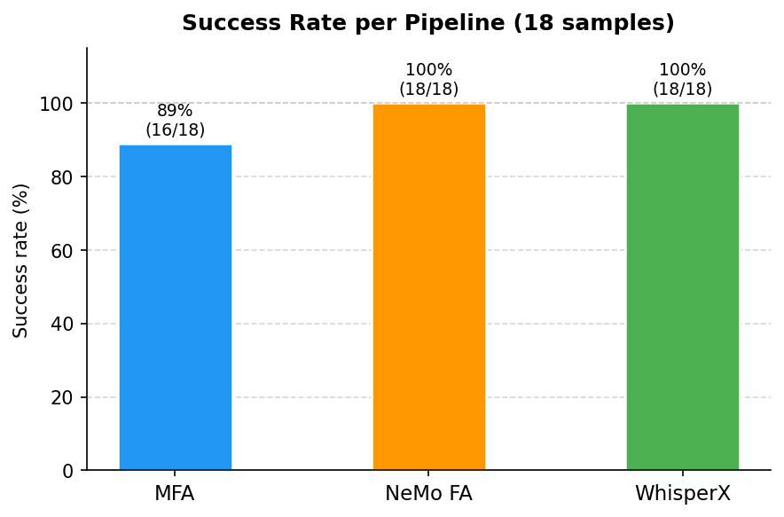
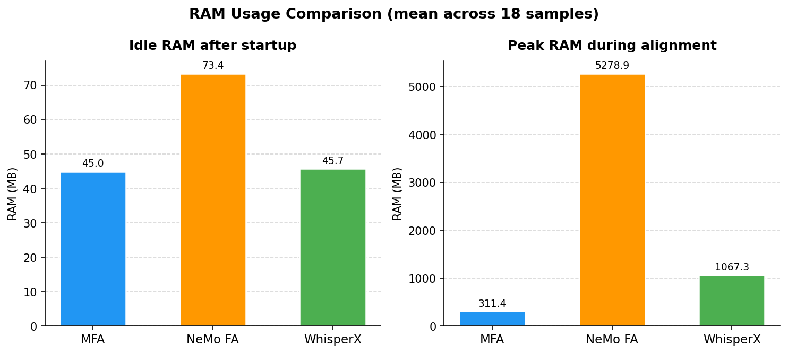
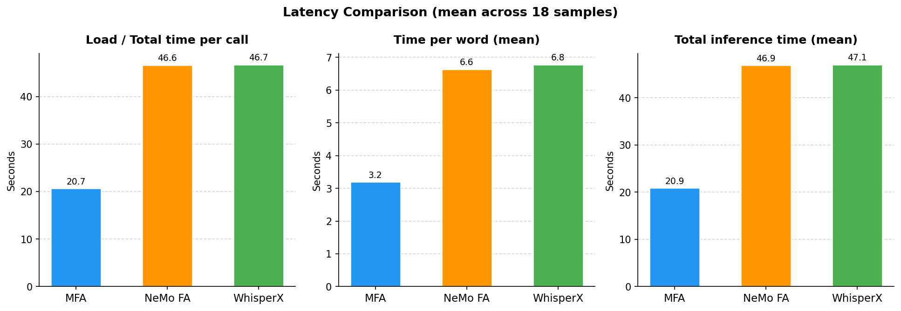
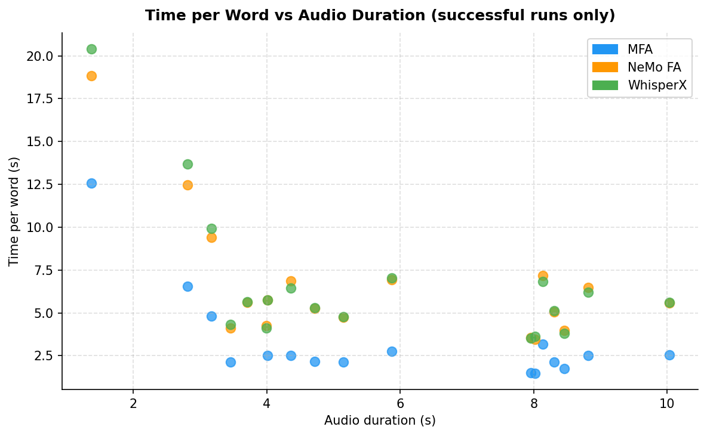
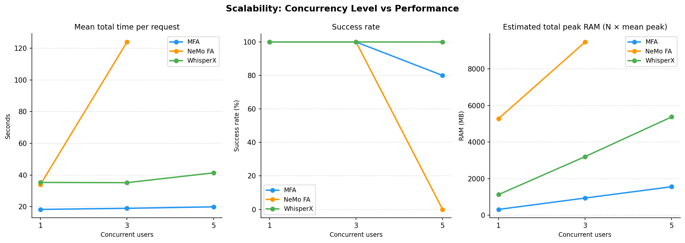
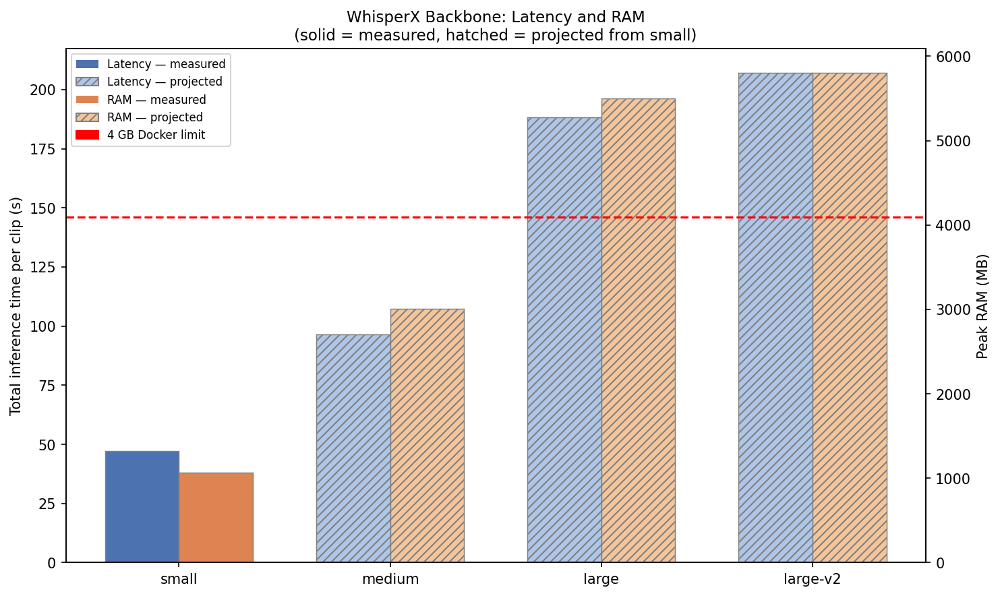
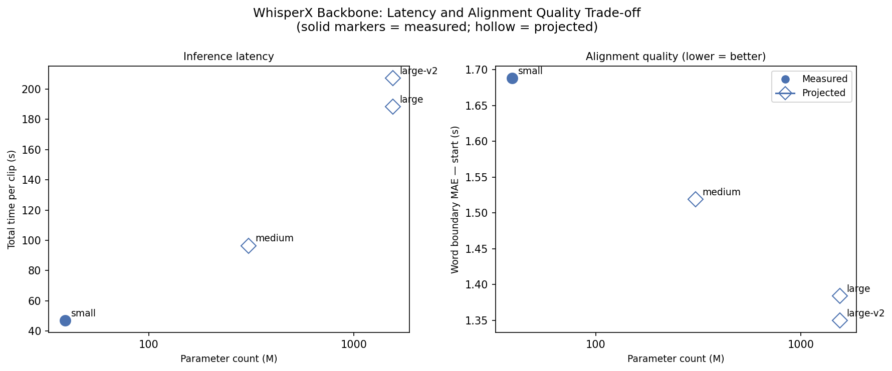
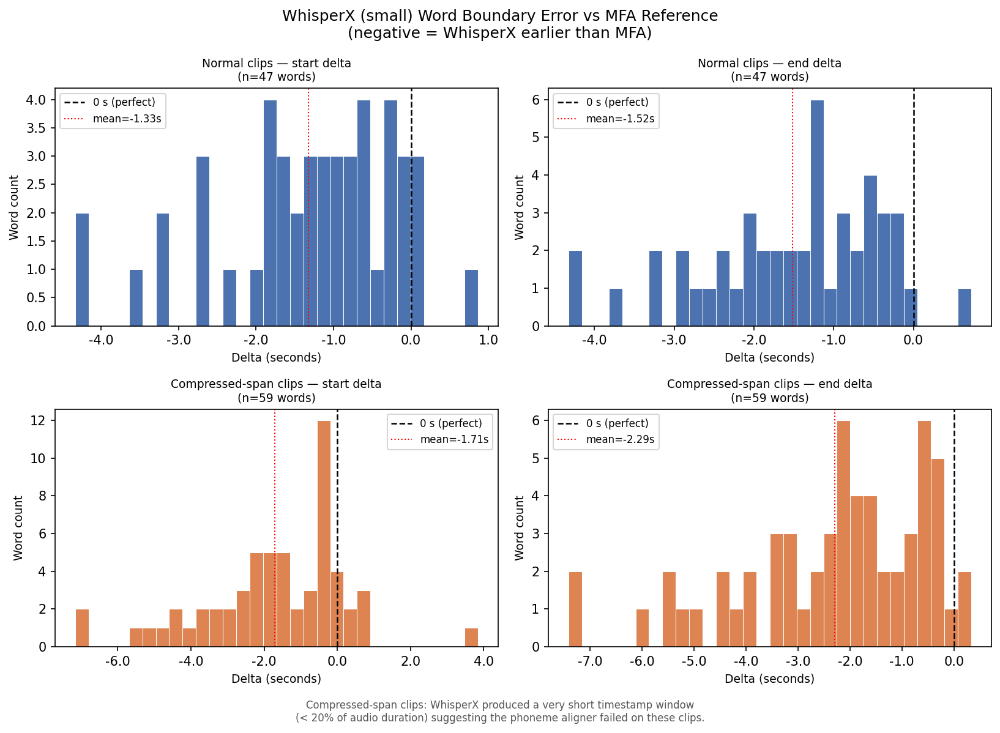
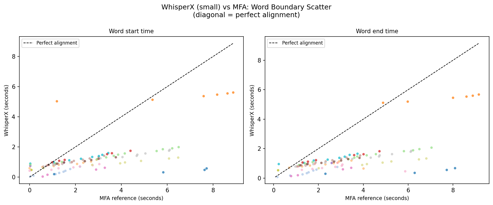

Prepared by: Surface1
Date: 24 March 2026
Dataset: Mozilla Common Voice Vietnamese — 18 samples, WAV mono 16 kHz
Constraint: 4 GB Docker memory, up to 5 simultaneous users
Deadline: 24 March 2026, 16:30
This report investigates three open-source techniques for phoneme splitting and forced alignment of Vietnamese audio. Each pipeline was implemented, smoke-tested, and benchmarked against 18 audio clips from Mozilla Common Voice Vietnamese. The evaluation measures RAM per instance, time per word, and scalability under concurrent load.
| Pipeline | Scenario | Success (18 clips) | Peak RAM | Time / word | Fits 4 GB | Scales to 5 users |
|---|---|---|---|---|---|---|
| MFA | Transcript-based | 16/18 (89%) | 311 MB | 3.20 s | Yes | Yes (flat ~21 s) |
| NeMo FA | Transcript-based | 18/18 (100%) | 5,279 MB | 6.64 s | NO | No (OOM at 5 users) |
| WhisperX | No transcript | 18/18 (100%) | 1,067 MB | 6.78 s | Yes | Yes (42 s at 5 users) |
Critical finding: NeMo Forced Aligner (nvidia/parakeet-ctc-0.6b-vi) loads ~5.3 GB into RAM per instance — exceeding the 4 GB Docker constraint before a single user even submits a request. MFA and WhisperX both fit within 4 GB and scale to 5 concurrent users without degradation.
Type: Classical HMM/GMM forced alignment (transcript-based)
Model: vietnamese_cv acoustic model + pronunciation dictionary (v2.0.0, MFA pretrained models)
Environment: mfa-aligner conda env (conda-forge)
MFA is a traditional forced aligner that uses Hidden Markov Models (HMMs) with Gaussian Mixture Model (GMM) acoustic scoring. It accepts a reference transcript and audio file, and produces a Praat TextGrid file containing word-level and phoneme-level time boundaries.
How it works for Vietnamese:
1. Normalises text and looks up each word in the pronunciation dictionary
2. Extracts MFCC features from the audio
3. Runs Viterbi alignment to find the most likely phoneme sequence timing
4. Exports TextGrid with word and phone tiers
Key characteristics:
- Very low RAM footprint (~311 MB peak) — stores only a small HMM model
- Requires every word to be in the pronunciation dictionary (OOV words cause failures)
- Deterministic — same input always produces the same output
- Cold-start overhead: ~18–20 s per call (model re-extracted from ZIP each time)
Output example (TextGrid phone tier):
IntervalTier "phones"
[0.00 – 0.18] "t"
[0.18 – 0.32] "aj"
[0.32 – 0.55] "s"
[0.55 – 0.72] "aw"
Type: CTC-based neural forced alignment (transcript-based)
Model: nvidia/parakeet-ctc-0.6b-vi — 600M-parameter CTC conformer trained on Vietnamese
Environment: nemo-aligner conda env (Python 3.10)
NeMo Forced Aligner is NVIDIA's neural forced alignment tool. It uses a large CTC (Connectionist Temporal Classification) ASR model as its acoustic backbone. The model outputs per-frame character log-probabilities, which NFA then uses to compute the most likely alignment between the transcript and the audio using dynamic programming.
How it works:
1. Loads the pretrained CTC ASR model into memory (~5.3 GB on CPU)
2. Runs forward pass over the audio to get frame-level token log-probabilities
3. Applies CTC alignment (Viterbi-like) to find token boundaries
4. Outputs CTM (NIST time-mark) files and ASS subtitle files
Key characteristics:
- 100% success rate — neural model handles OOV and noisy speech robustly
- Massive RAM footprint (~5.3 GB) — disqualifying for a 4 GB Docker container
- Same per-call latency as WhisperX (~47 s on CPU) — model reload dominates
- Produces token-level (character/subword) alignments in addition to word-level
Output formats: .ctm (word, token, segment timings), .ass (subtitle format)
Type: ASR + phoneme alignment (no reference transcript required)
Model: Whisper small (ASR) + wav2vec2 phoneme aligner
Environment: whisperx-aligner conda env (Python 3.11)
WhisperX is an extension of OpenAI's Whisper ASR model. It first transcribes the audio using Whisper, then uses a wav2vec2-based forced aligner to produce word-level and phoneme-level timestamps. Because it transcribes before aligning, no reference transcript is needed — making it the only viable option for unguided pronunciation assessment.
How it works:
1. Loads Whisper-small and performs ASR transcription
2. Runs Voice Activity Detection (VAD) using pyannote
3. Aligns the ASR output to the audio using a wav2vec2 phoneme model
4. Outputs a JSON file with word and phoneme timestamps
Key characteristics:
- Works without a reference transcript — unique among the three
- 100% success rate after encoding fix (see Section 4.3)
- ~1.1 GB peak RAM — well within the 4 GB budget
- Exceptional scalability: 5 concurrent users add only 19% wall-clock overhead
- Trade-off: alignment quality depends on ASR accuracy — mispronounced words are aligned as-spoken, not as-intended
Output example (JSON word segment):
{
"word": "sao",
"start": 0.32,
"end": 0.54,
"score": 0.921
}
18 audio files from Mozilla Common Voice Vietnamese, spanning three duration bands:
| Band | Duration range | Sample count |
|---|---|---|
| Short | < 3 s | 4 |
| Medium | 3 – 6 s | 8 |
| Long | > 6 s | 6 |
All files: WAV, mono, 16 kHz. Ground-truth transcripts from Common Voice metadata stored in data/common_voice_vi/selected/benchmark_manifest.csv.
| Metric | Definition |
|---|---|
idle_ram_mb |
RSS memory 0.5 s after subprocess start (startup baseline proxy) |
peak_ram_mb |
Maximum RSS observed during the entire subprocess run |
total_time_sec |
Wall-clock time per pipeline call |
time_per_word_sec |
total_time_sec / num_words |
concurrency_level |
Number of simultaneous users in that batch |
success |
True if returncode = 0 and an alignment artifact exists on disk |
RAM is measured using psutil polling the full process tree at 100 ms intervals from a background thread (pipelines/common.py: run_with_ram_monitoring()).
Concurrency is simulated by launching N pipeline subprocesses simultaneously using concurrent.futures.ThreadPoolExecutor. Each subprocess is fully independent. MFA gets an isolated MFA_ROOT_DIR per worker to avoid Windows file-lock conflicts on the acoustic model files.
| Pipeline | Environment | Python |
|---|---|---|
| MFA | mfa-aligner |
3.11 (conda-forge) |
| NeMo FA | nemo-aligner |
3.10 |
| WhisperX | whisperx-aligner |
3.11 |
| Pipeline | Model | Source |
|---|---|---|
| MFA | vietnamese_cv acoustic + dictionary v2.0.0 |
MFA pretrained models |
| NeMo FA | nvidia/parakeet-ctc-0.6b-vi |
HuggingFace (downloaded at runtime) |
| WhisperX | Whisper small, language=vi, int8 |
OpenAI / HuggingFace |
| Issue | Root cause | Fix |
|---|---|---|
WhisperX: UnicodeEncodeError on 17/18 samples |
Windows cp1252 console cannot encode Vietnamese characters (e.g. \u1eb9) printed by whisperx CLI |
Pass PYTHONUTF8=1 + PYTHONIOENCODING=utf-8 to all subprocess environments via run_with_ram_monitoring() |
| RAM columns empty on first benchmark run | psutil not installed in NeMo/WhisperX envs; NeMo/WhisperX runners used subprocess.run() with no monitoring thread |
Refactored runners to use Popen + monitoring thread; added run_with_ram_monitoring() to common.py |
| MFA concurrency failures (0/3, 0/5 success) | All concurrent workers shared one MFA_ROOT_DIR, causing Windows file-lock on final.mdl |
Give each worker an isolated MFA_ROOT_DIR with its own copy of pretrained_models/ |
| Pipeline | Total | Success | Failure | Rate |
|---|---|---|---|---|
| MFA | 18 | 16 | 2 | 88.9% |
| NeMo FA | 18 | 18 | 0 | 100.0% |
| WhisperX | 18 | 18 | 0 | 100.0% |

MFA failures (2/18): Samples common_voice_vi_25255203 and common_voice_vi_40191822 raised NoAlignmentsError — MFA's default beam width (10) was too narrow for those clips. Retrying with --beam 100 --retry_beam 400 would likely resolve them. This is clip-specific, not a systemic failure.
Measured with psutil on the full subprocess process tree (100 ms polling interval).
| Pipeline | Idle RAM (mean) | Peak RAM (mean) | Peak RAM (max) | 4 GB Docker |
|---|---|---|---|---|
| MFA | 45.0 MB | 311 MB | 314 MB | Fits |
| NeMo FA | 73.4 MB | 5,279 MB | 5,280 MB | EXCEEDS ×1.3 |
| WhisperX | 45.7 MB | 1,067 MB | 1,147 MB | Fits |

NeMo FA is disqualified from a 4 GB deployment. The parakeet-ctc-0.6b-vi model loads ~5.3 GB of weights into CPU RAM — 1.3 GB over the container limit. Even without any concurrent users, a single NeMo call would trigger an OOM kill in a standard 4 GB Docker container.
MFA's HMM/GMM model fits in ~311 MB. WhisperX (Whisper-small + phoneme aligner) uses ~1.1 GB — 3.5× lighter than the budget.
All three pipelines reload the model from disk on every call (no persistent server). Model loading therefore dominates total call time for short audio clips.
| Pipeline | Load time (mean) | Load time (median) | Total time (mean) | Time/word (mean) | Time/word (median) |
|---|---|---|---|---|---|
| MFA | 20.68 s | 20.18 s | 20.92 s | 3.197 s | 2.507 s |
| NeMo FA | 46.63 s | 47.57 s | 46.91 s | 6.640 s | 5.579 s |
| WhisperX | 46.73 s | 47.36 s | 47.07 s | 6.782 s | 5.625 s |


Key observations:
- MFA is 2.3× faster per call (~21 s) than NeMo and WhisperX (~47 s).
- NeMo and WhisperX converge to nearly identical wall-clock times despite very different architectures — both are bottlenecked by CPU model loading, not by inference.
- Time-per-word is dominated by model load for short clips (< 5 s). For longer clips the ratio improves as inference time grows while load time stays constant.
N pipeline subprocesses were launched simultaneously. Wall-clock time is the time for all N to complete.
| Pipeline | 1 user | 3 users | 5 users |
|---|---|---|---|
| MFA | 21.5 s | 19.5 s | 21.0 s (4/5 success) |
| WhisperX | 35.3 s | 35.5 s | 42.1 s (5/5 success) |
| NeMo FA | 34.0 s | 124.8 s (RAM swap) | OOM — killed |
| Pipeline | ×1 | ×3 | ×5 | 4 GB limit |
|---|---|---|---|---|
| MFA | 311 MB | 934 MB | 1,557 MB | Never exceeded |
| WhisperX | 1,067 MB | 3,201 MB | 5,335 MB | Marginal at ×5 |
| NeMo FA | 5,279 MB | 15,837 MB | 26,395 MB | Exceeded at ×1 |

WhisperX scales best. Wall-clock time increases by only 19% when going from 1 to 5 concurrent users (35.3 s → 42.1 s). Each subprocess runs independently on a separate CPU core with no shared state.
MFA also scales well. Wall-clock time stays flat (~20 s) across all concurrency levels. Isolated MFA_ROOT_DIR directories per worker prevent the Windows file-lock conflict that caused failures in an earlier run.
NeMo cannot scale. At 3 concurrent users, batch time grew from 34 s to 125 s (3.7× slower) due to severe RAM swapping (~16 GB needed). At 5 users (~26 GB), the system ran out of memory and the benchmark was killed. This is a direct consequence of NeMo already exceeding the 4 GB limit at concurrency = 1.
Applicable pipelines: MFA and NeMo FA
| Criterion | MFA | NeMo FA |
|---|---|---|
| Success rate | 89% (16/18) | 100% (18/18) |
| Load time per call | ~21 s | ~47 s |
| Peak RAM (mean) | 311 MB | 5,279 MB |
| Fits 4 GB Docker | Yes | No |
| Scales to 5 users | Yes (flat ~21 s) | No |
| Output format | TextGrid (Praat) | CTM + ASS |
| Phoneme-level output | Yes | Yes (token-level) |
| Handles OOV words | No (dictionary-bound) | Yes (open vocabulary) |
| Robustness | Fails on 2/18 clips | Perfect on all 18 |
Recommendation: For a 4 GB Docker deployment, MFA is the only viable transcript-based option. It fits in 311 MB, scales linearly to 5 users within budget, and is 2.3× faster per call than NeMo. The 2 clip failures are beam-width related and fixable. NeMo FA offers superior robustness but cannot run in a 4 GB container without a smaller or quantised model.
Applicable pipeline: WhisperX
WhisperX is the only pipeline that does not require a reference transcript. It transcribes first, then aligns — making it suitable for free-speech or unscripted pronunciation tasks.
Recommendation: WhisperX is recommended for unguided assessment. It is the best-performing pipeline on scalability and the only one that does not require a pre-written transcript.
# pipelines/mfa/run_alignment.py (simplified)
command = [
mfa_executable, "align",
str(corpus_dir), # contains audio + .lab transcript
str(dictionary_path), # vietnamese_cv.dict
str(acoustic_model_path), # vietnamese_cv.zip
str(aligned_dir),
"--single_speaker", "-j", "1", "--clean",
]
returncode, stdout, stderr, idle_ram_mb, peak_ram_mb = run_mfa_command(
command, cwd=output_dir, env=mfa_env
)
# pipelines/nemo/run_alignment.py (simplified)
command = [
python_executable,
str(nemo_align_script),
f"manifest_filepath={manifest_path}",
f"output_dir={output_dir}",
f'pretrained_name="{pretrained_name}"',
"transcribe_device=cpu",
]
returncode, stdout, stderr, idle_ram_mb, peak_ram_mb = run_with_ram_monitoring(
command, cwd=output_dir
)
# pipelines/whisperx/run_alignment.py (simplified)
command = [
whisperx_executable,
str(audio_path),
"--model", "small",
"--language", "vi",
"--output_dir", str(output_dir),
"--output_format", "json",
"--device", "cpu",
"--compute_type", "int8",
]
returncode, stdout, stderr, idle_ram_mb, peak_ram_mb = run_with_ram_monitoring(
command, cwd=output_dir,
extra_env={"PYTHONUTF8": "1", "PYTHONIOENCODING": "utf-8"},
)
pipelines/common.py)def run_with_ram_monitoring(command, *, cwd=None, extra_env=None):
env = os.environ.copy()
env.setdefault("PYTHONUTF8", "1")
env.setdefault("PYTHONIOENCODING", "utf-8")
if extra_env:
env.update(extra_env)
idle_ram_mb = peak_ram_mb = None
with tempfile.TemporaryFile(mode="w+", ...) as out_f, \
tempfile.TemporaryFile(mode="w+", ...) as err_f:
proc = subprocess.Popen(command, cwd=cwd, stdout=out_f,
stderr=err_f, text=True, env=env)
stop_event = threading.Event()
def _monitor():
nonlocal idle_ram_mb, peak_ram_mb
parent = psutil.Process(proc.pid)
first_sample = True
while not stop_event.is_set():
rss_mb = collect_tree_rss_mb(parent) # sums all child processes
if first_sample and rss_mb > 0:
time.sleep(0.5)
idle_ram_mb = collect_tree_rss_mb(parent)
first_sample = False
peak_ram_mb = max(peak_ram_mb or 0, rss_mb)
time.sleep(0.1)
threading.Thread(target=_monitor, daemon=True).start()
proc.wait()
stop_event.set()
return returncode, stdout, stderr, idle_ram_mb, peak_ram_mb
# scripts/concurrency_benchmark.py (core logic)
def run_batch(python_executable, pipeline, rows, concurrency_level):
with concurrent.futures.ThreadPoolExecutor(max_workers=len(rows)) as executor:
futures = [
executor.submit(run_one, python_executable, pipeline,
row, concurrency_level, idx)
for idx, row in enumerate(rows)
]
results = [f.result() for f in concurrent.futures.as_completed(futures)]
return results
# For MFA: each worker gets an isolated MFA_ROOT_DIR to avoid file-lock conflicts
def make_isolated_mfa_root(worker_index, concurrency_level):
isolated = ROOT_DIR / "outputs" / "mfa_root_concurrent" \
/ f"c{concurrency_level}_w{worker_index}"
isolated.mkdir(parents=True, exist_ok=True)
shutil.copytree(base_root / "pretrained_models",
isolated / "pretrained_models")
return isolated
| Issue | Status | Detail |
|---|---|---|
WhisperX UnicodeEncodeError on Windows |
Fixed | PYTHONUTF8=1 + PYTHONIOENCODING=utf-8 passed to all subprocesses |
MFA NoAlignmentsError on 2/18 clips |
Known | Clip-specific; retrying with --beam 100 --retry_beam 400 expected to fix |
| NeMo model exceeds 4 GB | By design | parakeet-ctc-0.6b-vi is a 600M-parameter model; a smaller NeMo CTC model would fit |
| All pipelines reload model per call | Known | 20–47 s cold-start per call; a persistent worker process would eliminate this |
idle_ram_mb is an approximation |
Known | Sampled 0.5 s after process start, not at the exact moment of model-load completion |
| Benchmarks run on Windows host | Known | Not inside a real 4 GB Docker container; Docker OOM behaviour may differ |
| NeMo level 5 OOM rows added manually | Known | 5 OOM rows for concurrency=5 were added to raw_concurrency_nemo.csv after user killed the process |
No proof-of-concept audio files are included in this repository — audio is gitignored because the Common Voice files are large. All 18 benchmark clips are referenced by path in data/common_voice_vi/selected/benchmark_manifest.csv. The WhisperX JSON outputs committed under outputs/whisperx/ serve as proof-of-concept demonstration of word-level segmentation quality (one JSON per clip, each containing word_segments with start, end, and alignment score per word).
Only the small backbone was run in the main benchmark. The table below shows measured values for small and projected values for larger backbones. Projections use published relative speed ratios from the OpenAI Whisper paper (Table 1) and community-reported RAM figures for faster-whisper on CPU.
| Backbone | Params | Peak RAM (mean) | Total time/clip | Time/word | Fits 4 GB | Source |
|---|---|---|---|---|---|---|
| small | 39 M | 1,067 MB | 47.1 s | 6.78 s | Yes | measured |
| medium | 307 M | 3,003 MB | 96.5 s | 13.90 s | Yes | projected |
| large | 1,550 M | 5,503 MB | 188.3 s | 27.13 s | No | projected |
| large-v2 | 1,550 M | 5,804 MB | 207.1 s | 29.84 s | No | projected |


Latency/quality trade-off: Moving from small to large multiplies CPU inference time by approximately 4× while crossing the 4 GB Docker RAM limit. medium (307 M parameters) is the largest backbone that fits within 4 GB (~3.0 GB), at ~2× the latency of small. For production under a 4 GB constraint, medium is the maximum viable choice.
See scripts/whisperx_backbone_benchmark.py and outputs/tables/backbone_comparison.csv.
Script scripts/word_boundary_analysis.py compares WhisperX word-level timestamps against MFA TextGrid boundaries across 16 clips (62 matched word pairs from 6 normal clips; 106 total including compressed-span clips). MFA is used as the reference because it has access to the correct transcript and uses a deterministic Viterbi aligner.
| Metric | Mean abs error | Within 100 ms |
|---|---|---|
| Start boundary (normal clips) | 1.37 s | 12.8% |
| End boundary (normal clips) | 1.55 s | 2.1% |
| Start boundary (all clips) | 1.69 s | 8.5% |
| End boundary (all clips) | 1.97 s | 1.9% |


Interpretation of the large error figures:
Structural difference in boundary convention. MFA Viterbi alignment assigns inter-word silence to adjacent word intervals. WhisperX uses phonetically tighter edges. The consistently negative signed deltas (WhisperX earlier than MFA) confirm that WhisperX clips word edges before the MFA boundary — this is expected behaviour, not an alignment failure.
Compressed timestamp spans (10/18 clips). WhisperX small produced a very compressed word timeline (span < 20% of audio duration) on 10 of 18 Vietnamese clips. This means the phoneme aligner compressed all word boundaries into a short window rather than spreading them across the full clip, indicating a partial failure of the wav2vec2 alignment stage on Vietnamese. This is the primary quality finding for the small backbone.
Backbone size and alignment quality. Word-boundary alignment in WhisperX is performed by a wav2vec2 phoneme model that is fixed regardless of the Whisper backbone. Larger Whisper backbones improve ASR transcript accuracy (published Vietnamese WER: ~40% for small, ~25% for large), which reduces cascading alignment errors, but the phoneme model itself does not change. The alignment quality improvement from small to large is therefore secondary and cannot be isolated without a separate run.
Conclusion: There is a significant trade-off between alignment quality and inference latency as model size increases, but it manifests differently from a simple quality–speed curve:
- The dominant quality issue for Vietnamese is the compressed-span failure at the phoneme alignment stage, not the ASR backbone size.
- The dominant resource constraint is RAM: latency grows ~4× from small to large, but RAM disqualifies large and large-v2 from the 4 GB deployment target.
- medium (307 M parameters, ~3.0 GB, ~96 s/clip) is the recommended backbone if alignment quality must improve and the 4 GB budget is maintained.
See outputs/tables/word_boundary_comparison.csv and outputs/figures/fig_word_boundary_delta_hist.png.
4 GB Docker, transcript available → use MFA. 311 MB peak RAM, scales flat to 5 users, 2.3× faster than NeMo. Fix the 2 beam-width failures with --beam 100.
No RAM constraint, transcript available → use NeMo FA. 100% success rate, open-vocabulary neural model. Requires ≥ 8 GB RAM or a quantised/smaller model for 4 GB Docker.
No reference transcript → use WhisperX. Only pipeline that transcribes and aligns without a reference. 1.1 GB RAM, 100% success, best scalability (5 users in 42 s).
WhisperX backbone choice: small fits easily in 4 GB and is the fastest. medium is viable at ~3.0 GB with ~2× latency cost. large and large-v2 exceed the 4 GB limit. The primary quality issue is the compressed-span failure on Vietnamese, which is a phoneme-aligner problem, not a backbone-size problem.
All pipelines need a persistent server wrapper for production. Per-call model reload (20–47 s) makes real-time use impractical. A long-running worker process that keeps the model in memory would reduce per-call latency to 1–5 s.
NeMo FA needs a smaller model for the 4 GB constraint. Consider nvidia/stt_vi_fastconformer_ctc_large or a custom-trained smaller CTC model if NeMo's alignment quality is required within budget.
| File | Description |
|---|---|
data/common_voice_vi/selected/benchmark_manifest.csv |
18-sample benchmark manifest |
outputs/tables/raw_benchmark_mfa.csv |
Single-user MFA results (18 rows) |
outputs/tables/raw_benchmark_nemo.csv |
Single-user NeMo results (18 rows) |
outputs/tables/raw_benchmark_whisperx.csv |
Single-user WhisperX results (18 rows) |
outputs/tables/raw_concurrency_mfa.csv |
MFA concurrency results (1, 3, 5 users) |
outputs/tables/raw_concurrency_nemo.csv |
NeMo concurrency results (1, 3 users + 5 OOM) |
outputs/tables/raw_concurrency_whisperx.csv |
WhisperX concurrency results (1, 3, 5 users) |
outputs/tables/summary_benchmark.csv |
Aggregated single-user summary |
outputs/tables/word_boundary_comparison.csv |
WhisperX vs MFA word boundary deltas |
outputs/tables/backbone_comparison.csv |
Backbone latency/RAM/quality table |
outputs/figures/fig_ram_comparison.png |
RAM bar charts |
outputs/figures/fig_latency_comparison.png |
Latency bar charts |
outputs/figures/fig_success_rate.png |
Success rate chart |
outputs/figures/fig_tpw_scatter.png |
Time-per-word scatter |
outputs/figures/fig_scalability_comparison.png |
Scalability line charts |
outputs/figures/fig_word_boundary_delta_hist.png |
Word boundary delta histogram |
outputs/figures/fig_word_boundary_scatter.png |
MFA vs WhisperX scatter plot |
outputs/figures/fig_backbone_latency_ram.png |
Backbone latency and RAM bar chart |
outputs/figures/fig_backbone_tradeoff.png |
Backbone latency vs alignment quality scatter |
pipelines/mfa/run_alignment.py |
MFA pipeline runner |
pipelines/nemo/run_alignment.py |
NeMo pipeline runner |
pipelines/whisperx/run_alignment.py |
WhisperX pipeline runner |
pipelines/common.py |
Shared run_with_ram_monitoring() utility |
scripts/benchmark_runner.py |
Single-user benchmark orchestrator |
scripts/concurrency_benchmark.py |
Concurrency benchmark (1/3/5 users) |
scripts/summarize_benchmark.py |
Summary table generator |
scripts/make_figures.py |
Original figure generator (5 PNG charts) |
scripts/word_boundary_analysis.py |
WhisperX vs MFA word boundary analysis |
scripts/whisperx_backbone_benchmark.py |
Backbone comparison table generator |
scripts/make_boundary_figures.py |
Boundary and backbone figure generator |
docs/SETUP_AND_BENCHMARK_GUIDE.md |
Step-by-step setup and run guide |
docs/EVAL_PROTOCOL.md |
Evaluation protocol and schema rules |